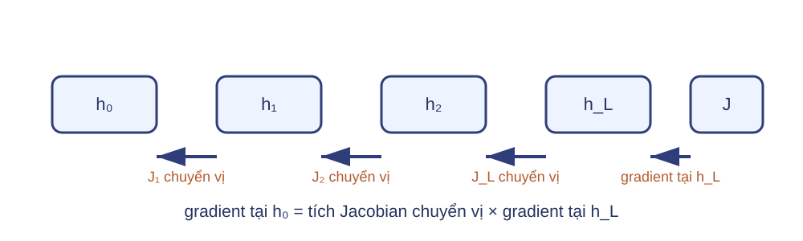
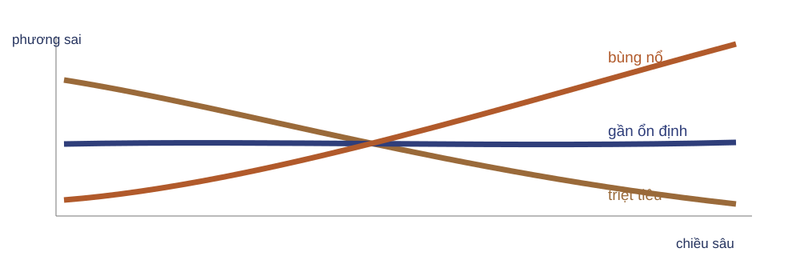
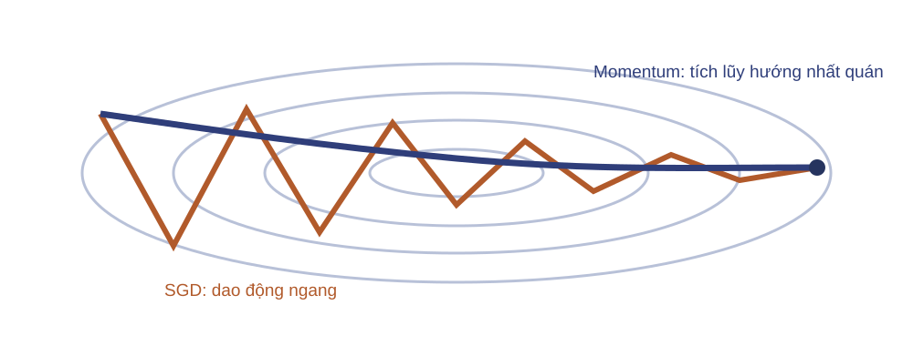
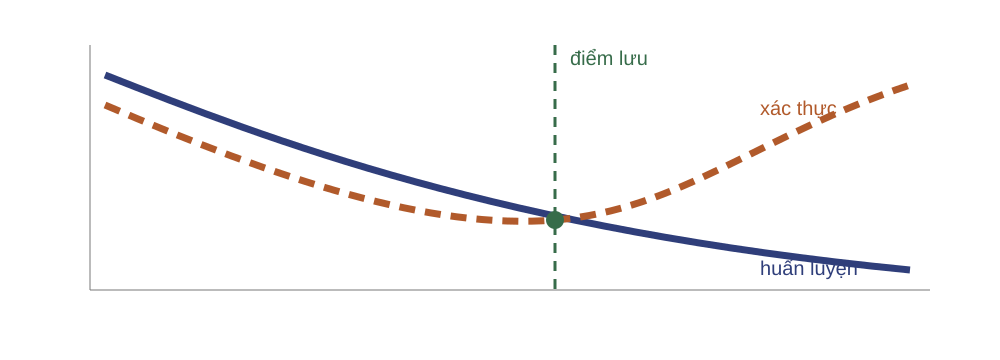
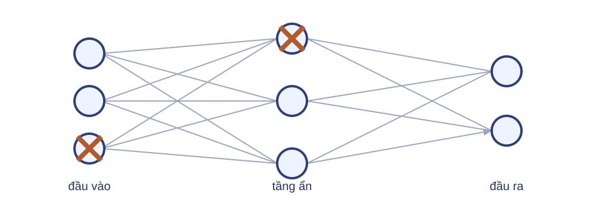
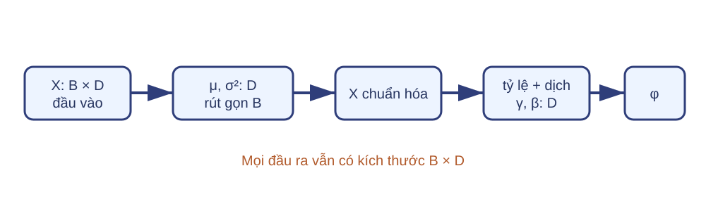
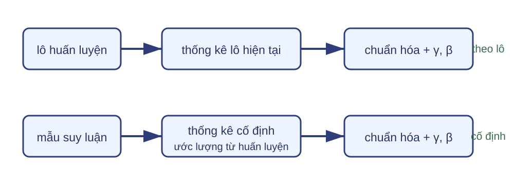

Ba nguồn bất ổn cần tách riêng Phép toán số Mũ tràn, log của số gần 0, chia cho độ lệch chuẩn gần 0.
Chuỗi đạo hàm Tích nhiều Jacobian làm gradient nhỏ dần hoặc lớn dần.
Thang kích hoạt Khởi tạo làm tín hiệu co lại, khuếch đại hoặc các đơn vị đối xứng.
Ba nhóm có biểu hiện chồng lấn nhưng cách sửa khác nhau. Softmax ổn định xử lý phép toán; khởi tạo xử lý thang ban đầu; bộ tối ưu xử lý bước trên bề mặt mất mát.Nguồn: giáo trình, PDF 96–100; lec10_training.pdf , PDF 23–24.
Log-sum-exp giữ softmax hữu hạn $$m_i=\max_c z_{ic},\qquad \operatorname{LSE}(z_{i:})=m_i+\log\sum_c e^{z_{ic}-m_i}.$$
$$\log p_{iy}=z_{iy}-\operatorname{LSE}(z_{i:}).$$
Câu hỏi: Với $z=(1000,999)$, sau khi trừ cực đại ta lấy mũ của hai số nào?
Đáp án là 0 và −1, nên phép mũ hữu hạn. Ví dụ cục bộ đứng cùng công thức để hoàn tất chu trình rút gọn trực giác–tính toán–kiểm tra mà không thêm trang.Nguồn: lec04_multiclass.pdf , PDF 19.
Đạo hàm đi qua tích nhiều Jacobian 
Chuẩn tích nhỏ kéo gradient về 0.
Chuẩn tích lớn làm gradient tăng nhanh.
Không suy từ một đạo hàm cục bộ đơn lẻ. Hành vi phụ thuộc tích Jacobian dọc đường truyền và hướng vector gradient, nên đây là cơ chế định tính chứ không phải bảo đảm cho mọi mẫu.Nguồn: giáo trình, PDF 96–100; hình vẽ lại.
Đối xứng phải giữ cả đường vào và đường ra $$w_1=w_2,\qquad b_1=b_2,\qquad v_1=v_2,\qquad \bar h_j=\frac{\partial L}{\partial h_j}.$$
$$h_1=h_2,\ \bar h_1=\bar h_2\quad\Longrightarrow\quad \nabla_{w_1}L=\nabla_{w_2}L.$$
$v_1,v_2$ là trọng số nối ra. Chỉ có $h_1=h_2$ chưa đủ để kết luận hai gradient bằng nhau.
Đặt mọi trọng số bằng nhau giữ cả kết nối vào và ra đối xứng, nên hai đơn vị nhận cùng tín hiệu ngược và cùng cập nhật. Nếu kết nối ra khác nhau, gradient thượng nguồn có thể khác dù kích hoạt bằng nhau.Nguồn: lec10_training.pdf , PDF 23; giáo trình, PDF 100.
Khởi tạo kiểm soát phương sai qua tầng 
Xavier $$\operatorname{Var}(W_{ij})=\frac{2}{n_{in}+n_{out}}.$$
Kaiming với ReLU $$\operatorname{Var}(W_{ij})=\frac{2}{n_{in}}.$$Đây là quy tắc dưới giả thiết về độc lập, trung bình gần 0 và loại kích hoạt; không bảo toàn phương sai trong mọi kiến trúc.
Các công thức ghi phương sai; độ lệch chuẩn là căn bậc hai. Xavier cân bằng số chiều vào/ra; Kaiming bù việc ReLU chặn một phần tín hiệu theo giả thiết của phép suy.Nguồn: lec10_training.pdf , PDF 24; giáo trình, PDF 98–100; hình vẽ lại.
Kiểm tra phương sai khởi tạo Câu hỏi: Tầng $256\rightarrow128$ dùng Xavier có phương sai nào? Nếu đầu ra dùng ReLU, Kaiming theo số chiều vào cho phương sai nào?
Xavier: $2/(256+128)=1/192$.
Kaiming: $2/256=1/128$.
Xavier cho phương sai 1/192 và Kaiming cho 1/128. Phân biệt phương sai với độ lệch chuẩn; nếu một triển khai nhận độ lệch chuẩn, dùng căn của các giá trị này.Nguồn: lec10_training.pdf , PDF 24; giá trị đã tính lại.
Điều kiện kém làm bước SGD dao động 
Một tốc độ học chung bị giới hạn bởi hướng có độ cong lớn, dù hướng còn lại tiến triển chậm.
Hình elip là mô hình trực giác cho bề mặt điều kiện kém. Không dùng nó để khẳng định bề mặt mạng sâu là lồi.Nguồn: lec10_training.pdf , PDF 11–12; hình vẽ lại.
SGD chỉ dùng đạo hàm tức thời $$w_t=w_{t-1}-\eta g_t.$$
Hướng nhất quán Các bước cùng chiều nhưng không được tích lũy.
Hướng đổi dấu Các bước qua lại tạo đường răng cưa.
Nhiễu lô nhỏ làm hướng gradient thay đổi. Momentum thêm trạng thái để tổng hợp lịch sử ngắn của các bước.Nguồn: lec10_training.pdf , PDF 11–12.
Momentum tích lũy hướng nhất quán $$u_t=\beta u_{t-1}-\eta g_t,\qquad w_t=w_{t-1}+u_t,qquad u_0=0.$$
Beta giữ một phần vận tốc trước. Gradient đổi dấu theo một tọa độ sẽ triệt bớt vận tốc ở tọa độ đó; gradient cùng dấu làm vận tốc tích lũy.Nguồn: lec10_training.pdf , PDF 13; hình vẽ lại.
Hai bước Momentum giữ dấu theo từng tọa độ $$w_0=(1,-1),\ \eta=.1,\ \beta=.9,\ g_1=(2,.5),\ g_2=(2,-.5).$$
Bước $u_t$ $w_t$ 1 $(-.2,-.05)$ $(.8,-1.05)$ 2 $(-.38,.005)$ $(.42,-1.045)$
Tọa độ một tích lũy cùng hướng; tọa độ hai gần triệt tiêu vì gradient đổi dấu.
Tính u trước rồi mới cộng vào w. Giá trị bước hai: 0.9(−0.2,−0.05)−0.1(2,−0.5)=(−0.38,0.005).Nguồn: công thức từ lec10_training.pdf , PDF 13; ví dụ đã tính lại.
RMSprop đổi tỷ lệ theo từng tham số $$s_t=\beta s_{t-1}+(1-\beta)(g_t\odot g_t),$$
$$w_t=w_{t-1}-\eta\frac{g_t}{\sqrt{s_t}+\varepsilon}.$$
$s_t$ và các phép bình phương, căn, chia đều theo phần tử; $s_0=0$.
Nguồn PDF 14 gọi chung là tốc độ học thích nghi nhưng công thức dùng trung bình trượt bình phương gradient, tức kiểu RMSprop chứ không phải tổng tích lũy AdaGrad.Nguồn: lec10_training.pdf , PDF 14; nhãn đã sửa theo công thức.
RMSprop tính trạng thái trước khi cập nhật $$w_0=(1,-1),\ g_1=(2,.5),\ s_0=0,\ \beta=.9,\ \eta=.1.$$
$$s_1=.9s_0+.1(g_1\odot g_1)=(.4,.025).$$
$$w_1=w_0-.1\frac{g_1}{\sqrt{s_1}}\approx(.6838,-1.3162).$$
Tính nhẩm đặt $\varepsilon=0$; triển khai phải dùng $\varepsilon>0$.
Tỷ số theo hai tọa độ đều xấp xỉ 3.1623 vì trạng thái bắt đầu từ 0. Việc ghi s0=0 là bổ sung cần thiết để ví dụ xác định duy nhất.Nguồn: công thức từ lec10_training.pdf , PDF 14; ví dụ đã tính lại.
Adam kết hợp hai mômen $$m_t=\beta_1m_{t-1}+(1-\beta_1)g_t,$$
$$v_t=\beta_2v_{t-1}+(1-\beta_2)(g_t\odot g_t).$$
$m_t$: hướng trung bình trượt.
$v_t$: thang bình phương trung bình trượt.
Hai trạng thái có cùng kích thước với w và khởi tạo bằng 0. Hiệu chỉnh độ chệch phải xảy ra trước khi dùng hai mômen để cập nhật w.Nguồn: lec10_training.pdf , PDF 15.
Adam hiệu chỉnh mômen ở bước đầu $$w_0=(1,-1),\ g_1=(2,.5),\ \beta_1=.9,\ \beta_2=.999,\ \eta=.1.$$
$$m_1=(.2,.05),\ v_1=(.004,.00025),\ \hat m_1=(2,.5),\ \hat v_1=(4,.25).$$
$$w_1=w_0-.1\frac{\hat m_1}{\sqrt{\hat v_1}}=(.9,-1.1).$$
Tính nhẩm đặt $\varepsilon=0$; triển khai phải dùng $\varepsilon>0$.
Hiệu chỉnh chia m1 cho 1−beta1 và v1 cho 1−beta2. Ví dụ dùng cùng w0,g1,eta với RMSprop để so cơ chế, không dùng kết quả để xếp hạng.Nguồn: công thức và giá trị mặc định từ lec10_training.pdf , PDF 15; ví dụ đã tính lại.
Bộ tối ưu khác nhau ở trạng thái và cơ chế Bộ tối ưu Trạng thái phụ Cơ chế Điểm cần thử SGD $0$ Gradient hiện tại $\eta$, lịch Mômen $P$ Tích lũy hướng $\eta,\beta$ RMSprop $P$ Đổi tỷ lệ từng tọa độ $\eta,\beta,\varepsilon$ Adam $2P$ Mômen + đổi tỷ lệ $\eta,\beta_1,\beta_2,\varepsilon$
Câu hỏi: Chạy cấu hình mặc định rồi xếp hạng có đủ để kết luận không?
Các con số 0/P/P/2P là bộ nhớ trạng thái phụ ngoài P tham số; chi phí tính mỗi bước vẫn bậc O(P). Không xếp hạng phổ quát. So sánh phải giữ mô hình, dữ liệu, tiền xử lý, ngân sách và tiêu chí xác thực. Bộ tối ưu xử lý đường đi trên tập huấn luyện; tổng quát hóa phải được đánh giá trên dữ liệu chưa thấy.Nguồn: lec10_training.pdf , PDF 11–17.
Khoảng cách xác thực báo hiệu quá khớp 
Tổng quát hóa là chất lượng trên dữ liệu chưa thấy. Điều chỉnh nhiều lần theo xác thực cũng thích nghi với chính tập xác thực đó.
Trước khi kết luận quá khớp, kiểm tra quy trình xác thực có dùng cùng tiền xử lý và không chứa rò rỉ. Chọn điểm lưu theo xác thực là một quyết định siêu tham số; tập kiểm tra vẫn phải được khóa đến cuối.Nguồn: lec10_training.pdf , PDF 7, 35–36; hình vẽ lại.
Điều chuẩn sửa mục tiêu huấn luyện L2 làm cấu hình có trọng số lớn phải trả thêm chi phí trong mục tiêu.
$$L(\theta)=L_{data}(\theta)+\frac\lambda2\sum_{W\in\mathcal W}\lVert W\rVert_2^2,\qquad \lambda\ge0.$$
$\mathcal W$: tập ma trận trọng số chịu phạt.
Bias, $\gamma,\beta$: thường cấu hình riêng.
Dropout: nhiễu ngẫu nhiên, không phải hạng phạt mục tiêu.
Hạng phạt định lượng trực tiếp chi phí của trọng số lớn. Không coi việc loại bias hoặc tham số chuẩn hóa khỏi L2 là quy tắc tuyệt đối; phải ghi cấu hình.Nguồn: lec10_training.pdf , PDF 35–37; giáo trình, PDF 64–66.
L2 co trọng số trong bước SGD $$L(w)=L_{data}(w)+\frac\lambda2\lVert w\rVert_2^2,\qquad \nabla_wL=g_{data}+\lambda w,$$
$$w'=(1-\eta\lambda)w-\eta g_{data}.$$
Diễn giải “co” áp dụng cho $(1-\eta\lambda)w$ khi $0\le\eta\lambda\le1$; ví dụ số có $\eta\lambda=.005$.
Hệ số một phần hai làm đạo hàm của hạng phạt bằng $\lambda w$. Điều kiện trên khóa hệ số $1-\eta\lambda$ trong đoạn $[0,1]$; bước đầy đủ còn có dịch chuyển $-\eta g_{data}$. Công thức này suy trực tiếp cho SGD thuần.Nguồn: lec10_training.pdf , PDF 37; giáo trình, PDF 64–66.
Một bước L2 gồm co và dịch $$w=(2,-1),\quad g_{data}=(.4,-.2),\quad \eta=.1,\quad\lambda=.05.$$
Câu hỏi: Hạng nào co cả hai tọa độ về 0?
$$w'=.995(2,-1)-.1(.4,-.2)=(1.95,-.975).$$
Đáp án là (1−eta lambda)w. Bước gradient dữ liệu có thể kéo một tọa độ về hoặc xa 0 tùy dấu g.Nguồn: công thức từ lec10_training.pdf , PDF 37; ví dụ đã tính lại.
Suy giảm trọng số tách khỏi gradient mất mát L2 trong đạo hàm $$g=\nabla L_{data}+\lambda w,$$
Bộ tối ưu biến đổi toàn bộ $g$.
Suy giảm tách rời $$w'=(1-\eta\lambda)w-\eta s,$$
$s$ do bộ tối ưu tạo từ gradient dữ liệu.
Với $0\le\eta\lambda\le1$, $(1-\eta\lambda)$ là hệ số co. Hai cách trùng với SGD thuần, nhưng không trùng với mọi phép biến đổi thích nghi.
Không đồng nhất mọi tham số suy giảm trọng số với L2 khi chưa xem cách bộ tối ưu triển khai. Phép suy giảm tách rời được minh họa bằng AdamW. L2 cho lực phạt tỷ lệ với độ lớn trọng số; L1 dùng một chuẩn khác có đóng góp theo dấu.Nguồn: lec10_training.pdf , PDF 37.
L1 có đạo hàm dưới theo dấu Với $w=(2,-.5,0)$ và $\lambda=.1$, hai tọa độ khác 0 nhận đóng góp đạo hàm dưới của hạng phạt là $(.1,-.1)$; tại 0 không có một đạo hàm duy nhất.
L1: ngoài 0, độ lớn đóng góp luôn bằng $\lambda$.
L2: đóng góp $\lambda w_i$ thay đổi theo $|w_i|$.
$$\widetilde J(w)=L_{data}(w)+\lambda\lVert w\rVert_1,\quad \lambda\ge0,\qquad \partial |w_i|=\begin{cases}\{-1\},&w_i<0,\\[-2pt] [-1,1],&w_i=0,\\[-2pt] \{1\},&w_i>0.\end{cases}$$
Câu hỏi: Tại $w_i=0$, đóng góp đạo hàm dưới của hạng phạt thuộc khoảng nào?
$\lambda\partial|0|=[-.1,.1]$.
Đạo hàm dưới là tập các độ dốc hỗ trợ một hàm lồi tại điểm không khả vi; với $|w_i|$ tại 0, tập đó là $[-1,1]$. So sánh với L2 chỉ xét hạng phạt, không bỏ qua gradient dữ liệu. L1 khuyến khích nhiều trọng số bằng 0 nhưng không bảo đảm mọi mạng sâu thu được nghiệm thưa.Nguồn: Goodfellow, Bengio và Courville, §7.1.2, trang in 230–231, (7.18)–(7.20).
Hai tọa độ gặp cùng một ngưỡng $\lambda=.2$, $H_{ii}=.5$ nên ngưỡng $\lambda/H_{ii}=.4$.
$w_i^*=.3\mapsto0$; $w_i^*=-.9\mapsto-.5$.
Trong xấp xỉ bậc hai cục bộ quanh $w^*$, $H_{ii}:=\partial^2L_{data}/\partial w_i^2>0$ là độ cong theo tọa độ $i$. Hessian chéo $\Rightarrow$ xấp xỉ tách theo từng tọa độ.
$$w_i=\operatorname{sign}(w_i^*)\max\!\left(|w_i^*|-\frac{\lambda}{H_{ii}},0\right).$$
Câu hỏi: Điều kiện nào đưa tọa độ $i$ về đúng 0?
$|w_i^*|\le\lambda/H_{ii}$.
Nguồn suy công thức cho hồi quy tuyến tính không có bias. Deck dùng ký hiệu $L_{data}$ để minh họa xấp xỉ bậc hai cục bộ quanh nghiệm không điều chuẩn $w^*$; đây không phải nghiệm đóng cho mọi mạng sâu. L1 và L2 đổi mục tiêu trên trọng số, còn dropout dùng nhiễu trên kích hoạt.Nguồn: Goodfellow, Bengio và Courville, §7.1.2, trang in 231–232, (7.21)–(7.23).
Dropout che ngẫu nhiên đơn vị khi huấn luyện 
Mỗi lượt xuôi lấy một mặt nạ mới; đơn vị bị che không truyền kích hoạt trong lượt đó.
Trực giác nguồn là giảm phụ thuộc đồng thích nghi và tạo nhiễu cấu trúc. Đây không phải khẳng định dropout luôn cần hoặc luôn thay thế được chuẩn hóa theo lô.Nguồn: lec10_training.pdf , PDF 39–41; giáo trình, PDF 103–105; hình vẽ lại.
Dropout đảo tỷ lệ giữ kỳ vọng $$0\le p<1,\quad m_j\sim\operatorname{Bernoulli}(1-p),\quad h_j^{train}=\frac{m_jh_j}{1-p}.$$
$$\mathbb E_m[h_j^{train}]=h_j,\qquad h_j^{infer}=h_j.$$
Kỳ vọng thuộc chế độ huấn luyện; suy luận là ánh xạ đồng nhất, không lấy mặt nạ.
Dropout đảo tỷ lệ chia cho xác suất giữ khi huấn luyện, nên suy luận không nhân thêm hệ số.Nguồn: giáo trình, PDF 103–105; đối chiếu lec10_training.pdf , PDF 39.
Mặt nạ giữ hai trong ba đơn vị $$h=(2,-1,4),\quad p=.5,\quad m=(1,0,1).$$
$$h'=\frac{m\odot h}{1-p}=(4,0,8).$$
Một lượt cụ thể không giữ tổng hay chuẩn; kỳ vọng qua mặt nạ mới giữ từng kích hoạt.
Không xem vector (4,0,8) là kết quả suy luận. Ở suy luận theo quy ước này, đầu ra là h=(2,−1,4).Nguồn: giáo trình, PDF 103–105; ví dụ đã tính lại.
Dropout đổi hành vi theo chế độ mô hình Huấn luyện Lấy mặt nạ ngẫu nhiên và chia cho xác suất giữ.
Suy luận Không lấy mặt nạ; dùng kích hoạt đầy đủ.
Câu hỏi: Nếu quên chuyển sang chế độ suy luận, cùng một mẫu có nhận cùng dự đoán qua hai lượt không?
Không nhất thiết, vì mặt nạ mới làm dự đoán ngẫu nhiên. Chế độ mô hình khác với việc bật hay tắt ghi gradient. Dropout thay đổi ngẫu nhiên kích hoạt; chuẩn hóa theo lô kiểm soát thang kích hoạt bằng thống kê lô.Nguồn: lec10_training.pdf , PDF 39–41; giáo trình, PDF 105.
Chuẩn hóa theo lô ổn định thang kích hoạt Đầu vào tầng Phân phối kích hoạt thay đổi khi các tầng trước được cập nhật.
Biến đổi học được Chuẩn hóa theo lô rồi khôi phục tỷ lệ và dịch bằng tham số.
Kỹ thuật có thể giúp tối ưu ổn định hơn; không bảo đảm loại bỏ gradient triệt tiêu hoặc bùng nổ.
Chuẩn hóa theo lô có thể giúp tối ưu ổn định hơn, nhưng cơ chế và mức cải thiện phụ thuộc mô hình, dữ liệu và chế độ huấn luyện.Nguồn: lec10_training.pdf , PDF 25–26, 30; giáo trình, PDF 153–154, 157–158.
Chuẩn hóa MLP theo trục lô $$X\in\mathbb R^{B\times D},\quad \mu_d=\frac1B\sum_{i=1}^B X_{id},\quad \sigma_d^2=\frac1B\sum_{i=1}^B(X_{id}-\mu_d)^2.$$
$$\hat X_{id}=\frac{X_{id}-\mu_d}{\sqrt{\sigma_d^2+\varepsilon}},\qquad Y_{id}=\gamma_d\hat X_{id}+\beta_d.$$
$\mu,\sigma^2,\gamma,\beta\in\mathbb R^D$; tất cả phát rộng theo $B$ hàng.
Hằng số epsilon nằm trong căn để tránh chia cho 0. Gradient của gamma và beta có kích thước D; X, X chuẩn hóa và Y đều có kích thước B×D.Nguồn: giáo trình, PDF 153–155; kích thước được làm rõ so với mô tả nguồn.
Một lô MLP cho phép kiểm tra từng đại lượng $$X=\begin{bmatrix}1&3\\3&7\end{bmatrix},\quad \mu=(2,5),\quad \sigma^2=(1,4).$$
$$\hat X\approx\begin{bmatrix}-1&-1\\1&1\end{bmatrix},\quad \gamma=(2,.5),\ \beta=(1,-1),$$
$$Y\approx\begin{bmatrix}-1&-1.5\\3&-.5\end{bmatrix}.$$
Tính tay đặt $\varepsilon=0$; triển khai dùng $\varepsilon>0$. Mọi vector dài 2 phát rộng theo hàng.
Hai phương sai đều dương nên có thể đặt epsilon bằng 0 để tính tay; dấu xấp xỉ nhắc kết quả triển khai với epsilon dương sẽ hơi khác. $X,\hat X,Y:2\times2$; $\mu,\sigma^2,\gamma,\beta:2$. Trung bình và phương sai lấy theo hai hàng, riêng cho từng cột.Nguồn: công thức từ giáo trình, PDF 153–155; ví dụ đã tính lại.
Chuẩn hóa nằm giữa afin và kích hoạt 
$$H=\phi\!\left(\operatorname{BN}(XW+b)\right).$$
Đây là vị trí theo khuyến nghị nguồn chính và giáo trình cho MLP điển hình. Các kiến trúc khác có thể đặt chuẩn hóa khác; không biến sơ đồ này thành quy tắc phổ quát.Nguồn: lec10_training.pdf , PDF 27, 31–32; giáo trình, PDF 155; hình vẽ lại.
Huấn luyện và suy luận dùng thống kê khác nhau 
$\gamma$ và $\beta$ dùng ở cả hai chế độ; thống kê suy luận là trạng thái cố định, không phải gradient tham số.
Khi huấn luyện, thống kê lô tham gia biến đổi. Khi suy luận, dùng thống kê cố định được ước lượng từ quá trình huấn luyện; dải nguồn không khóa cách cập nhật cụ thể nên không khẳng định công thức EMA hay hệ số cập nhật.Nguồn: lec10_training.pdf , PDF 28; giáo trình, PDF 156–157; hình vẽ lại.
Ba lỗi chuẩn hóa theo lô thường gặp Lô quá nhỏ Ước lượng thống kê nhiễu; hành vi phụ thuộc thành phần lô.
Chế độ sai Suy luận vẫn dùng thống kê lô thay vì thống kê cố định.
Trục sai Rút gọn nhầm đặc trưng làm mất cấu trúc cần giữ.
Câu hỏi: Với $X:B\times D$ trong ví dụ số, nếu rút gọn qua $D$ trong từng hàng thì đại lượng nào bị trộn?
Các đặc trưng trong cùng một mẫu bị trộn; các mẫu không bị trộn. BN cho MLP lô theo hàng phải rút gọn qua B, tức qua các hàng cho từng cột. Cùng tensor trong ví dụ số cho thấy rút gọn qua trục đặc trưng sẽ đổi đại lượng được chuẩn hóa. Vòng ngoài chọn cấu hình vẫn không được dùng tập kiểm tra.Nguồn: lec10_training.pdf , PDF 30, 33; giáo trình, PDF 155–158.